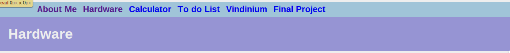

Have you ever wondered how a webpage is created? In the following sections, I will explain how I created the Hardware Page on my website. Enjoy!
Below is an example of a nav bar, although there is also one on this webpage.
In order to create a working navigation bar, I created an unordered list of all the links of my web pages and the text I wanted to show up in its place. ul means unordered list, li meaning list item (so the things I want in each list entry), and a being action (or the working element I want on the page). In forming a list, I used the li tag, to show this information was part of the list, followed by an a tag (with an href to add a link), and lastly the title that you want to serve as the button with the closing tag. I also had to add a link to the page holding the nav bar (so, in my case, mainstyle.css).
<ul id="navbar">
<li> <a href="About-Me-Page.html"> About Me </a></li>
<li> <a href="hardware.html"> Hardware </a></li>
<li> <a href="how-to.html"> How To </a></li>
<li> <a href=#> Calculator </a></li>
<li> <a href=#> To do List </a></li>
<li> <a href=#> Vindinium </a></li>
<li> <a href=#> Final Project </a></li>
</ul>
Whenever you want a heading you use the tag <h2>, x being the number between 1 and 6 that designate the sizing (6 is smallest and 1 is largest). In my Harware Page, I used one <h1> element to show the viewer the topic of the page and several <h2> to show the viewer the individual topics of the sections about the computer parts. My section on The Mighty Monitor, for example, has the code <h2> The Mighty Monitor </h2>. If you will notice, I have a heading start and end tag to show my program that I want the data between the two as a heading.
<h1> This is a heading! </h1>
This is a paragraph!
To add a paragraph, use the <p> tag. Unlike the heading tag, the paragraph tag does not have an sizing due to the fact that all paragraphs on your webpage should be the same size. Another thing to note is that with paragraphs, one paragraph element is equal to one line unless the information is too large to fit in one line on the webpage.
<p> This is a paragraph! </p>
If you look at the images, they were added by using the image tag, <img. When using this tag, you add the source (src=) and styling, with controls the width. With all these images, I had to size them so they would be appropriate and the source which shows the actual photo.
<img src="Image.png">
To create blocks of text and images that are centered, I created large divs, or tags used to separate sections of elements from each other. Within this div, I used the styling option to make it centered, and in cases where I wanted it more up or down, I also used the styling option to add a larger margin top to distance to from the top of the webpage. I usually added a heading, an image, and a paragraph on the topic, and because it was in this centered div, these were also centered and lower down. I use this in the following sections: The Mighty Monitor, The Salty CPU, and the Mammoth Motherboard.
<div style="text-align: center; margin-top: 500px">
<h2> The Mammoth Motherboard </h2>
<img src="https://upload.wikimedia.org/wikipedia/commons/d/dd/MicroATX_Motherboard_with_AMD_Athlon_Processor_2_Digon3.jpg" style="width: 400px">
<p> The motherboard is a large card to which most other pieces of the computer are connected. The motherboard manages communication between all the systems. For example, it manages power for all subsystems, so when one is low on power, it can easily be recharged.
</p>
<p></p>
</div>
Sections such as The Kindly Keyboard and The Hardy Hard Drive are on either the left or the right side. Similar to the sections that were centered, sections to be placed to the left or to the right were placed in their own divs with the according headings, images, and text. Then, I used styled the entire div with the float element, and this means that all elements styled with, for example, float: left, will all be moved to the left. I used this with sections with both on the left or on the right. Because I wanted sections to be aligned on the left and the right, I changed the width of the div to a percentage, this percentage being how much of the page I wanted it to take up. As long as one section is not 100% of the page, there is room for the other section to be located. For this reason, each section has a width of 40% so that both can fit on one page.
<div style="width: 40%; float: left; margin-left: 100px">
<h2> The Rambunctious RAM </h2>
<img src="http://notebooks.com/wp-content/uploads/2013/10/shutterstock_133277192.jpg" style="width: 300px">
<p> The RAM is the short term memory. The pros of RAM are that it is very fast and easy to save. However, it takes an enormous amount of power to keep data on the RAM. For this reason, RAMs are usually connected to an outside power source. </p>
</div>
<div style="float: right; width: 40%; margin-right: 100px">
<h2> The Hardy Hard Drive </h2>
<img src="http://usa-digital.com/wp-content/uploads/2015/11/ihs-isuppli-thailand-floods-hard-drives.jpg" style="width: 300px">
<p> The hard drive is a storage spot for the computer's data. It takes long term data, so things like how to reboot or how to use a search engine are wired into metallic plates that are electromagnetically charged. </p>
</div>